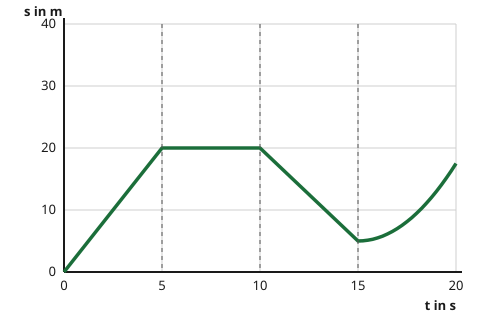

Das Weg-Zeit-Diagramm lesen
Mit einem KI-Tutor lernen
Ein KI-Tutor erklärt dir diese Seite und hilft dir bei den Übungen. Wähl deinen Assistenten:
Mit Claude öffnen Mit ChatGPT öffnen Mit Mistral Vibe öffnen
Du nutzt dein eigenes Konto beim Anbieter. Der Assistent ist kein Angebot von lernapps.net: lernapps liefert nur Inhalte und Übungen. Die Wahl gilt für alle Seiten, nur auf diesem Gerät.
Einstieg - Lisa fährt zur Haltestelle
Lisa fährt mit dem Fahrrad von zu Hause los. Alle paar Sekunden messen wir, wie weit sie vom Startpunkt entfernt ist. Eine lange Liste von Zahlen ist unübersichtlich. Ein Weg-Zeit-Diagramm schreibt dieselben Messungen als eine Linie auf.
Du kennst schon aus Klasse 7: Das Tempo ist der Weg durch die Zeit. Neu ist, dass wir den Weg nicht nur einmal angeben, sondern zu jedem Zeitpunkt. So sehen wir die ganze Bewegung auf einen Blick.
Anschaulich erklärt
Im Diagramm geht die Zeit nach rechts, die Entfernung vom Startpunkt nach oben. Jeder Punkt der Linie sagt: Zu dieser Zeit ist Lisa so weit vom Start weg. Das Bild zeigt vier Abschnitte von je 5 Sekunden. Die gestrichelten Linien trennen sie.

- Die Linie steigt gerade nach oben: Lisa entfernt sich gleichmäßig vom Start.
- Die Linie ist waagerecht: Die Entfernung ändert sich nicht, Lisa steht.
- Die Linie fällt: Lisa kommt dem Startpunkt wieder näher, sie fährt zurück.
- Die Linie wird immer steiler: Lisa wird schneller.
Lisas Weg in vier Abschnitten. Achte auf die Neigung der Linie in jedem Abschnitt.
Quelle: eigene Zeichnung. Lizenz: CC-BY-4.0.So kommst du vom Weg-Zeit-Diagramm zum Tempo: Im ersten Abschnitt ist die Linie gerade, Lisas Tempo bleibt also gleich. Sie legt in 5 Sekunden 20 Meter zurück. Mit ist das . Eine steilere Linie heißt: in der gleichen Zeit mehr Weg, also ein größeres Tempo. Eine waagerechte Linie heißt: kein neuer Weg, also Stillstand.
- Weg-Zeit-Diagramm
Ein Weg-Zeit-Diagramm zeigt, wie weit ein Körper zu jeder Zeit vom Startpunkt entfernt ist. Die Zeit steht auf der waagerechten Achse, der Weg auf der senkrechten.
Achtung - das Diagramm ist kein Bild des Weges
Wenn die Linie nach oben geht, heißt das nicht, dass Lisa bergauf fährt. Lisa kann auf einer ganz ebenen Straße fahren. Die senkrechte Achse ist die Entfernung vom Start, nicht die Höhe. Die Form der Linie sagt dir, wie sich die Entfernung mit der Zeit ändert. Wie die Straße aussieht, sagt sie dir nicht.
Ausprobieren im Bewegungslabor
Im Labor fährst du 20 Sekunden lang, in vier Abschnitten zu je 5 Sekunden. Du startest bei 0 Metern mit 10 m/s. Mit jedem Regler stellst du ein, wie schnell du am Ende dieses Abschnitts bist. Das Diagramm zeigt, wie weit du vom Startpunkt entfernt bist. Innerhalb eines Abschnitts ändert sich dein Tempo gleichmäßig vom Wert am Anfang zum Wert am Ende. Der Anfangswert ist das Tempo am Ende des Abschnitts davor. Die Skalen bleiben immer gleich, damit du Änderungen vergleichen kannst. Die Quadrate auf der Linie sind die Enden der Abschnitte.
Probiere der Reihe nach aus:
- Stelle Abschnitt 2 und Abschnitt 3 auf 0 m/s. In Abschnitt 2 bremst du, die Linie wird dort flacher. Was macht die Linie in Abschnitt 3, wo du schon stehst?
- Drücke auf "Zurücksetzen". Stelle dann alle Abschnitte auf 20 m/s. Abschnitt 1 ist gebogen, die anderen sind gerade. Warum? Vergleiche den Weg in der ersten und in der letzten Sekunde von Abschnitt 1.
- Drücke wieder auf "Zurücksetzen". Setze bei Abschnitt 4 den Haken "rückwärts". Was passiert mit der Linie in Abschnitt 4?
Abschnitt 1 (0 bis 5 s)
Du bleibst bei 10 m/s.
Abschnitt 2 (5 bis 10 s)
Du bleibst bei 10 m/s.
Abschnitt 3 (10 bis 15 s)
Du bleibst bei 10 m/s.
Abschnitt 4 (15 bis 20 s)
Du bleibst bei 10 m/s.
Das Bewegungslabor zeigt eine Fahrt von 20 Sekunden in vier Abschnitten. Zu Beginn fährst du mit 10 m/s gleichmäßig: Nach 5, 10, 15 und 20 Sekunden bist du 50, 100, 150 und 200 Meter vom Startpunkt entfernt. Das Weg-Zeit-Diagramm ist dann eine gerade, ansteigende Linie. Mit JavaScript stellst du für jeden Abschnitt das Tempo am Ende ein und siehst die Linie sich ändern.
Beispiel - Werte ablesen
Wie schnell ist Lisa im ersten Abschnitt?
Schau auf Lisas Diagramm weiter oben. Im ersten Abschnitt ist die Linie gerade, das Tempo bleibt gleich. Bei liegt die Linie bei . Bei war sie bei . In 5 Sekunden hat sie also 20 Meter geschafft. Mit geht sie mit 4 m/s. Im zweiten Abschnitt bleibt die Linie bei 20 Metern: Dort ist gleich geblieben, also ist .
Übung
Übung
Lösung
Person A
A entfernt sich in jeder Sekunde weiter vom Start. Die Linie steigt, also ist A in Bewegung.
Person B richtige Antwort
Die Linie von B ist waagerecht: Die Entfernung bleibt 25 Meter, B steht.
Person C
C kommt dem Startpunkt immer näher. Die Linie fällt, also geht C zurück.
Wer steht, hat zu jeder Zeit dieselbe Entfernung vom Start. Das ergibt im Weg-Zeit-Diagramm eine waagerechte Linie.
Mehr dazu:
Übung
Lösung
Richtige Antwort: 40 m (erlaubte Abweichung: 2 m)
Bei 12 Sekunden liegt die Linie bei 40 Metern. Du suchst 12 auf der Zeitachse, gehst nach oben bis zur Linie und liest links die Entfernung ab.
Mehr dazu:
Übung
Lösung
Richtige Antwort: Die Aussage stimmt nicht.
Das stimmt nicht. Das Diagramm zeigt die Entfernung vom Startpunkt und nicht die Höhe der Straße. Die Linie steigt, weil Ben sich vom Start entfernt. Er kann dabei auf ebener Straße fahren.
Mehr dazu:
Übung
Lösung
Richtige Antwort: 1. Mia, 2. Ben, 3. Chris
Je steiler die Linie, desto mehr Weg in der gleichen Zeit, also desto größer das Tempo. Mia legt in 20 Sekunden 30 Meter zurück, Ben 60 Meter und Chris 120 Meter.
Mehr dazu: